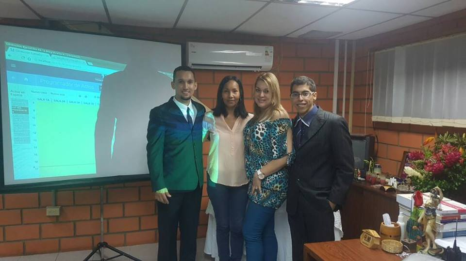

Ingeniero en Informática, actualmente estudiante en la universidad next_u

Técnico informático altamente experimentado y capacitado, con una sólida formación técnica y una excelente hoja de servicios. Preparado para explicar y desarrollar conceptos técnicos complejos a clientes y a personal inexperto de forma clara y comprensible. Capacitado para realizar múltiples tareas, tales como la instalación y reparación de sistemas informáticos, con total precisión y eficiencia. Me caracterizo por ser Proactivo e autodidacta, Responsable en mis labores, muy enfocado en mis proyectos, me proyecto a nivel profesional y con gran disposicion y actitud para trabajo en quipo